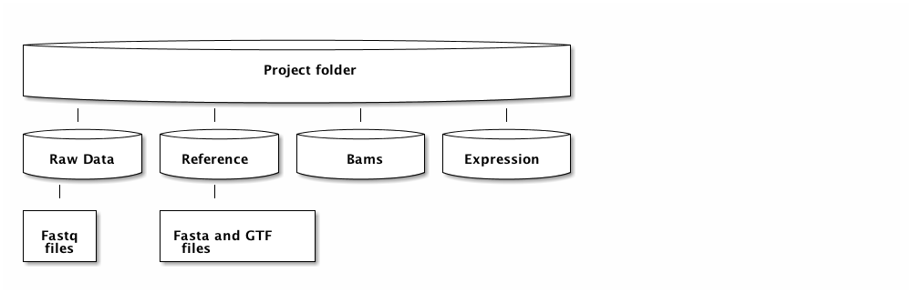

RNA sequence analysis with reference genome
Table of Contents
1 Introductionoo and data description
2 Uppmax
All the tools needed for analysis of this data set are available as modules on uppmax and hence need to be loaded to be used. Just as earlier this week modules are loaded with commands like this one:
module load bioinfo-tools module load FastQC/0.11.5
| RNAseq-practical.html |
| RNAseq-practical.org |
| ditaa-seqboxes.png |
Also remember that this need to be done on the node where you want to do the analysis if you already have an active reservation you have to ssh to your reserved node. If you are unsure weather you have already made a reservation you can look for all the jobs your user is currently running with the following command (remember to change username to your own uppmax username).
jobinfo -u username
In the list of active jobs you can see the name of the compute node that your reservation is associated with. Usually they are named M1, M2. Once you hav the name you can use the following command to go to that node.
ssh M1
If you do not have any job running, you need to ask for a new job using the course reservation.
salloc -A g2016001 -t 08:00:00 -p core -n 8 --no-shell --reservation=g2016008_4 &
Please make sure that you do not have multiple jobs running at once as that means that other course members will not be able to get access to compute nodes.
3 Create a folder structure for and collect data for analysis
At this time point you should be logged in to your compute node and ready to start the analysis. If you are unsure weather you are really at the compute node you can check the shell prompt that you terminal is displaying. If it says username$milou1 or username$milou2 your are still on the login node so make sure that it instead says something like username$m1.
Before we start the analysis we will set up a suitable folder structure for our data and results. This facilitates analysis and makes it easy to trace what has been done and locate files of interest. How one best structure this differs from person to person, but there are common patterns that most people tend to follow.
First of all one start at a place that have enough space to hold your data and analysis and decide on a folder, where one decides to store the data. For this class we suggest you create a folder for the raw reads. One folder for the results of mapping, one for genome sequence and annotations and finally one for the Expression analysis.
Go to the place where you want to store you data and analysis and create four folders with the following commands:
mkdir Reads mkdir Bams mkdir Expression mkdir Reference
The final step before we start analysing data is to collect the files needed for analysis. If you are at the main project folder the following commands will create copies of the files needed for the analysis to your workspace.
cp path_to_reads/* Reads/ cp path_to_refs/* Reference/
If you have managed to go through these steps you should now have the following structure of files and folder in your current work directory
